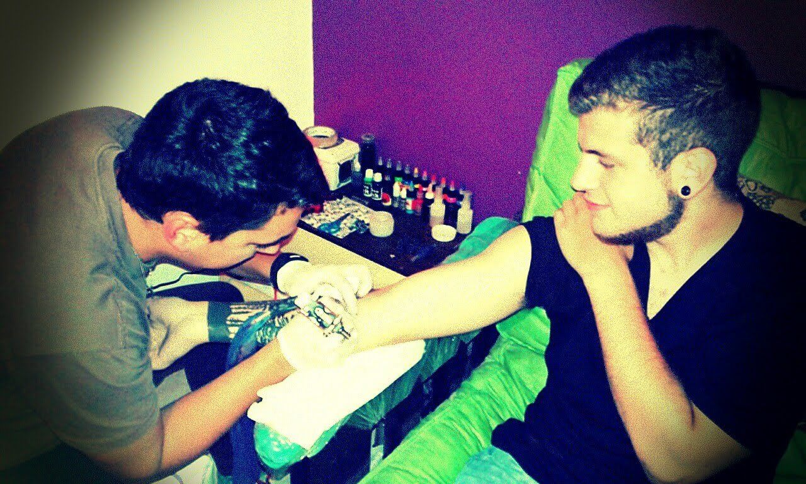
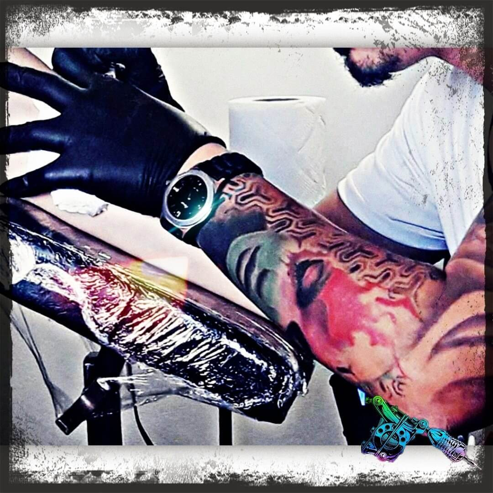
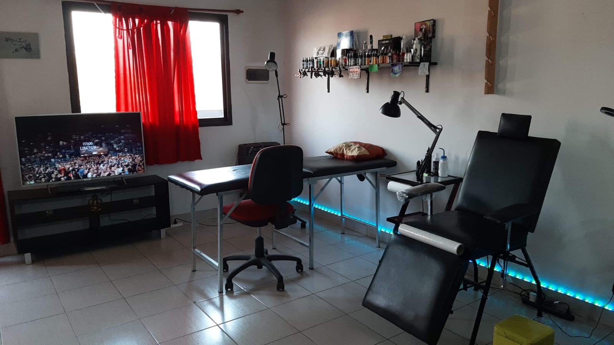

Sobre Max-Ink
Trayectoria
Max-Ink surge como un hobby por pasion, la pasion de expresar sentimientos a traves de la piel, y de ayudar a otras personas a poder hacerlo; eventualmente creciendo tanto en calidad como en alcance, pero sin dejar de lado lo mas importante: El cariño al tatuaje.
Actualidad
En la actualidad el estudio se encuentra profesionalizado, contando con la mas alta calidad en productos, y las maquinas mas modernas del mercado.
Estudio
El estudio de Max-Ink es, no solo moderno, sino tambien muy estetico, es un lugar planteado para el surgimiento de ideas, para dejar volar la imaginacion sobre el diseño del tatuaje en cuestion, teniendo como objetivo el mejor resultado final posible.
